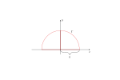

Mat3teden7
Table of Contents
Frenet-Serretovega triedra, ker je snov mat1 na teoretičnem izpitu ne bo!
1. Temeljni diferencialni operatorji na skalarnih in vektorskih poljih
Vzamemo nabor koordinat \( \xi = (\xi_1, \xi_2, \xi_3) \). Naj bo \( \vec{r} = \vec{r}(\xi) \) parametrizacija prostora \( \mathbb{R} ^3 \) (= izražava kartezičnih koordinat z \( \xi_1, \xi_2, \xi_3 \)). Predpostavljamo, da so koordinate ortogonalne.
Smerni odvodi kartezičnih koordinat so med seboj pravokotni v vsaki točki koordinatnega sistema.
Za vsak \( \xi \) ter \( \vec{r}_j := \vec{r}_j(\xi) = \frac{\partial \vec{r} }{\partial \xi_j} \) zahtevamo
\[ \left\langle \vec{r}_j, \vec{r}_k \right\rangle _{\mathbb{R}^3} = 0 \text{ za } j \ne k \]
1.1. Definicija 5.7
Lamejévi koeficienti so
\[ H_j := \left| \vec{r}_j \right|; \ j = 1, 2, 3 \]
Označimo še \( H := H_1 H_2 H_3 \). Naj bo še
\[ \vec{\eta}_j := \frac{\vec{r}_0}{\left| \vec{r}_j \right|} \]
Te količine \( \vec{r}_j, H_j, \vec{\eta}_j \) so funkcije (argumenta \( \xi \)).
Označimo z \( x = (x_1, x_2, x_3) \) standardne kartezične koordinate v \( \mathbb{R}^3 \).
1.2. Diferencialni operatorji v (kartezičnih koordinatah)
1.2.1. Definicija 5.2 (gradient)
\[ \nabla_x u := (u_{x_1}, u_{x_2}, u_{x_3}) \]
za \( u: \mathbb{R} ^3 \to \mathbb{R}^2\).
1.2.2. Definicija 5.3(divergenca)
\[ \mathrm{div}(X, Y, Z) := X_{x_1} + Y_{x_2} + Z_{x_3} \]
za \( (X, Y, Z): \mathbb{R}^3 \to \mathbb{R}^3 \)
1.2.3. Definicija 5.4(rotor)
\[ \mathrm{rot} (X, Y, Z) := \begin{vmatrix} \vec{i} & \vec{j} & \vec{k} \\ \frac{\partial }{\partial x_1} & \frac{\partial }{\partial x_2} & \frac{\partial }{\partial x_3} \\ X & Y & Z \end{vmatrix} = (Z_{x_2} - Y_{x_3}, X_{x_3}, Z_{x_1}, Y_{x_1} - X_{x_2}) \]
1.2.4. Definicija (Laplaceov operator)
\[ \Delta := \mathrm{div} \circ \nabla = \frac{\partial ^2 }{\partial x_1 ^2} + \frac{\partial ^2}{\partial x_2 ^2} + \frac{\partial ^2}{\partial x_3 ^2} \]
1.2.5. Sth
Vzamemo \( u = u(x): \mathbb{R}^3 \to \mathbb{R} \). Naj bo \( U \) njena izražava v koordinatah \( \xi \), to pomeni, definirano s predpisom \( u(x) = U(\xi) \). Torej
\[ U(\xi) := u(\vec{r}(\xi)) \]
oz.
\[ U = u \circ \vec{r} \]
1.2.6. Trditev 5.2
Privzemimo oznake od prej. Velja
\[ (\nabla _x, u)(\vec{r}) = \left\langle \nabla_{\xi}U, \begin{bmatrix} \frac{\vec{\eta}_1}{H_1} \\ \frac{\vec{\eta}_2}{H_2} \\ \frac{\vec{\eta}_3}{H_3} \end{bmatrix} \right\rangle \]
Dokaz: Po verižnem pravilu sledi za \( j\in \left\{ 1, 2, 3 \right\} \).
\( U = u \circ \vec{r} \), kjer so \( \vec{r} = (X, Y, Z) \), \( U = u(X, Y, Z) \) oz \( U(\xi) = u(X(\xi), Y(\xi), Z(\xi)) = u(\vec{r}(\xi)) \)
\[ \frac{\partial U}{\partial \xi_j} = \frac{\partial u}{\partial x} (\vec{r}(\xi)) \cdot \frac{\partial X}{\partial \xi_j} (\xi) + \frac{\partial u}{\partial y}(\vec{r}(\xi)) \cdot \frac{\partial Y}{\partial \xi_j}(\xi) + \frac{\partial u}{\partial z} \cdot \frac{\partial Z}{\partial \xi_j} (\xi) = \left\langle (\nabla_x u)(\vec{r}(\xi)), \frac{\partial \vec{r}}{\partial \xi_j}(\xi) \right\rangle_{\mathbb{R}^3} \]
Vemo, da je po naših oznakah \( \vec{r}_j = H_j \vec{\eta}_j \) iz česar potem sledi
\[ = H_j (\left\langle (\nabla_x u(\vec{r}), \vec{\eta}_j \right\rangle \]
Ker so \( \eta_1, \eta_2, \eta_3 \) ortonormirani (predpostavili smo ortogonalnost, saj so normirani že bili) sistem v \( \mathbb{R}^3 \) (predpostavke!). Sledi
\[ \vec{v} = \sum\limits_1^3 \left\langle v, \vec{\eta}_j \right\rangle \vec{\eta}_j \]
za vsak \( \vec{v} \in \mathbb{R} ^3 \).
Za \( \vec{v} = \nabla_x u(\vec{r}) \) velja
\begin{align*} (\nabla_x u)(\vec{r}) &= \sum\limits_{j = 1}^3 \left\langle (\nabla_x u) (\vec{r}), \vec{\eta}_j\right\rangle \vec{\eta}_j \\ &= \sum\limits_{j=1}^3 \frac{1}{H_j} \cdot \frac{\partial U}{\partial \xi_j} \vec{\eta}_j \\ &= \sum\limits_{j = 1}^3 \frac{\partial U}{\partial \xi_j} \frac{\vec{\eta}_j}{H_j} \\ &= \left\langle \begin{bmatrix} \frac{\partial U}{\partial \xi_1} \\ \frac{\partial U}{\partial \xi_2} \\ \frac{\partial U}{\partial \xi_3} \end{bmatrix}, \begin{bmatrix} \frac{\vec{\eta}_1}{H_1} \\ \frac{\vec{\eta}_2}{H_2} \\ \frac{\vec{\eta}_3}{H_3} \end{bmatrix} \right\rangle _{\mathbb{R}^3} \end{align*}Q.E.D.
Naj bo \( \vec{R} \) lokalni inverz k \( \vec{r} \).
Domača naloga: izrazi kartezični koordinatni sistem v \( \mathbb{R}^2 \) s polarnimi povsod.
1.2.7. Lema
Definiramo inverz \( \vec{R} = \vec{r}^{-1} \), kjer velja \( x = \vec{r}(\xi) \ \iff \ \xi = \vec{R}(x) \)
Izrek je VIP v matematiki, whereas lema pa je tisto, kar te pripelje do VIP lože.
Dragi on the difference between izrek in lema.
\[ \rot_x \left( \frac{\vec{\eta}_k}{H_k} \circ \vec{R} \right) \]
Dokaz:
Vzemimo \( k = 1, 2, 3 \). Velja, za \( U_k(\xi) := \xi_k \), tedaj
\[ \frac{\partial U_K}{\partial \xi_j} = \delta_{jk} = \begin{cases} 1; \ k = 1\\ 0; \ k \ne j \end{cases} \]
(Diracov delta).
Vemo, da je \( \rot \circ \nabla = 0 \). Sledi, za \( u_k(x) = U_k(\xi) \)
\begin{align*} 0 &= \rot \nabla u_K(\vec{r})= \sum\limits_{j=1}^3\rot \left[ \left( \frac{\partial U}{\partial \xi_j} \frac{\vec{\eta}_j}{ H_j} \right) \circ \vec{R} \right] \\ &= \rot(\frac{\vec{\eta}_K}{H_K} \circ \vec{R}) \end{align*}1.2.8. Posledica
\[ \dive\left(\frac{\vec{r}_j}{H} \circ \vec{R}\right) = 0 \ \forall j \]
To pomeni:
\[ \dive \left( \frac{\vec{\eta}_{j}}{H_2 H_3} \circ \vec{R} \right) = \dive \left(\frac{\vec{\eta}_2}{H_1 H_3} \circ \vec{R}\right) = \dive\left(\frac{\vec{\eta}_3}{H_1 H_2} \circ \vec{R}\right) \]
Dokaz:
Velja \( \vec{\eta}_1 = \pm \vec{\eta}_2 \times \vec{\eta}_3 \) (saj so \( \left\{ \vec{\eta}_j \right\} \) ortonormirana baza za \( \mathbb{R} ^3 \)).
Velja še \( \dive(\vec{F} \times \vec{G}) = \left\langle \rot \vec{F}, \vec{G} \right\rangle - \left\langle \vec{F}, \rot \vec{G} \right\rangle\)
Sledi
\begin{align*} \dive \frac{\vec{\eta}_1}{H_2 H_3} &= \pm \div \left( \frac{\vec{\eta}_2}{H_2} \times \frac{\vec{\eta}_3}{H_3} \right) \\ &= \left\langle \rot \frac{\vec{\eta}_2}{H_2}, \frac{\vec{\eta}_3}{H_3} \right\rangle - \left\langle \rot \frac{\vec{\eta}_3}{H_3}, \frac{\vec{\eta}_2}{H_2} \right\rangle \\ &\overset{\text{zg. lema}}{=} 0 \end{align*}Divergence, rotorja in … se ni potrebno bati, so samo okrajšave za določene matematične operacije. Nekateri moji kolegi bi temu rekli še kultne.
1.2.9. Posledica
Za \( A_j := \frac{1}{H_j} \frac{\partial U}{\partial \xi_j} \) imamo
\[ \dive(A_j \vec{\eta}_j) = \frac{1}{H_j} \frac{\partial }{\partial \xi_j} (\frac{H}{H_j ^2} \frac{\partial U}{\partial \xi_j} ) \]
To je
\[ \dive \left[ (A_j \vec{\eta}_j ) \circ \vec{R}\right] = \left[ \frac{1}{H} \frac{\partial }{\partial \xi_j} \left( \frac{H}{H_j ^2} \frac{\partial U}{\partial \xi_j} \right) \right] \circ \vec{R} \]
Dokaz
Vzamemo \( j = 1 \). Vemo
\[ \dive (\phi \vec{F}) = \left\langle \nabla \phi, \vec{F} \right\rangle _{\mathbb{R} ^3} + \phi \dive \vec{F} \]
Zato je
\begin{align*} \dive (A_1 \vec{\eta}_1) &= \dive \left(A_1 H_2 H_3 \cdot \frac{\vec{\eta}_1}{H_2 H_3}\right) \\ &= \left\langle \nabla(A_1 H_2 H_3), \frac{\vec{\eta}_1}{H_2 H_3} \right\rangle + A_1 H_2 H_3 \cdot \dive \left( \frac{\vec{\eta}_1}{H_2 H_3} \right) \\ &= \left\langle \nabla \left( \frac{H_2 H_3}{H_1}\right), \frac{\vec{\eta}_1}{H_2 H_3} \right\rangle \\ &= \frac{1}{H} \left\langle \nabla \left( \frac{H}{H_1 ^2} \frac{\partial U}{\partial \xi_1} \right), \frac{\partial \vec{r}}{\partial \xi_1} \right\rangle \end{align*}kjer so \( \vec{\eta}_1 = \frac{\vec{r}_1}{\left| \vec{r}_1 \right|} = \frac{\vec{r}_1}{H_1} \) in \( \frac{\vec{\eta}_1}{H_2 H_3} = \frac{\vec{r}_1}{H_1 H_2 H_3} = \frac{\vec{r}_1}{H} \)
Iz verižnega pravila sledi, da je skalarni produkt enak
\[ \frac{\partial }{\partial \xi_1} \left( \frac{H}{H_1 ^2} \frac{\partial U}{\partial \xi_1} \right) \circ \vec{R} \]
1.2.10. Izrek
Velja
\[ \Delta u = \frac{1}{H} \sum\limits_{j=1}^3 \frac{\partial }{\partial \xi_j} \left( \frac{H}{H_j ^2} \cdot \frac{\partial U}{\partial \xi_j} \right) \circ \vec{R} \]
Dokaz
\[ \Delta u = \dive \nabla u = \sum\limits_{j=1}^3 \dive \left[ A_j \vec{\eta}_j \circ \vec{R} \right] \]
Sedaj uporabimo zadnjo posledico.
1.2.11. Primer
- Cilindrične koordinate
Imamo \( \xi = (\xi_1, \xi_2, \xi_3) (\rho, \phi, z) \) za \( \rho \in [0, \infty), \ \phi \in [0, 2\pi), \ z \in \mathbb{R} \).
\[ (x, y, z) = \vec{r}(\rho, \phi, z) = (\rho \cos \phi, \rho \sin \phi, z) \]
\( \rho \) ima samo presečišče, \( \phi \) ga nima.
Ali je ortogonalnost koordinat?
\begin{align*} \vec{r}_1 &= \frac{\partial \vec{r}}{\partial \rho} = (\cos \phi, \sin \phi, 0) \\ \vec{r}_2 &= \frac{\partial \vec{r}}{\partial \phi} = \rho(-\sin \phi, \cos \phi, 0) \\ \vec{r}_3 &= \frac{\partial \vec{r}}{\partial z} = (0, 0, 1) \end{align*}Vidimo, da so koordinate ortogonalne.
Laméjevi koeficienti so:
\begin{align*} H_1 &= \left| \vec{r}_1 \right| = 1 \\ H_2 &= \left| \vec{r}_2 \right| = \rho \\ H_3 &= \left| \vec{r}_3 \right| = 1 \end{align*} \begin{align*} \vec{\eta}_1 &= \frac{\vec{r}_1}{H_1} = (\cos \phi, \sin \phi, 0) \\ \vec{\eta}_2 &= \frac{\vec{r}_2}{H_2} = (-\sin \phi, \cos \phi, 0) \\ \vec{\eta}_3 &= \frac{\vec{r}_3}{H_3} = (0, 0, 1) \\ \end{align*}Uporabimo trditev od včeraj za gradient
\begin{align*} (\nabla_x u) (\vec{r}) &= \frac{\partial U}{\partial \xi_1} \frac{\vec{\eta}_1}{H_1} + \frac{\partial U}{\partial \xi_2} \frac{\vec{\eta}_2}{H_2} + \frac{\partial U}{\partial \xi_3} \frac{\vec{\eta}_3}{H_3} \\ &= \frac{\partial U}{\partial \rho} (\cos \phi, \sin \phi, 0) + \frac{\partial U}{\partial \phi} \frac{(- \sin \phi,\cos \phi, 0)}{\rho} + \frac{\partial U}{\partial z} (0, 0, 1) \end{align*}Laplaceov operator je (uporabimo izrek od danes)
\begin{align*} (\Delta u) (x) &= \frac{1}{\rho} \left[ \frac{\partial }{\partial \rho} \left( \rho \frac{\partial U}{\partial \rho} \right) + \frac{\partial }{\partial \phi} \left( \frac{1}{\rho} \frac{\partial U}{\partial \phi} \right) + \frac{\partial }{\partial z} \left( \rho \frac{\partial U}{\partial z} \right) \right] \\ (\Delta u) (x) &= \frac{1}{\rho} \frac{\partial }{\partial \rho} \left( \rho \frac{\partial U}{\partial \rho} \right) + \frac{1}{\rho ^2} \frac{\partial ^2 U}{\partial \phi ^2} + \frac{\partial ^2 U }{\partial z ^2} \end{align*}- Primer
Vzamemo \( U = U(\rho, \phi, z) = \rho ^2 + z ^2 \) oz. \( u = u(x, y, z) = x ^2 + y ^2 + z ^2 \) in zanima nas Laplace.
Pri direktnem je
\[ \nabla u = (2x, 2y, 2z) \]
Pri posrednem pa
\[ \nabla "U" = 2\rho (\cos \phi, \sin \phi, 0) + 0 \cdot \frac{(- \sin \phi, \cos \phi, 0)}{\rho} + 2 z (0, 0, 1) = (2\rho \cos \phi, 2 \rho \sin \phi, 2 z) \]
kar je enako direktnemu.
Laplace pa je direktno
\[ \Delta u = 2 + 2 + 2 = 6 \]
Laplace posredno pa je
\[ \Delta u = \frac{1}{\rho} \frac{\partial }{\partial \rho} (\rho 2 \rho) + \frac{1}{\rho ^2} \cdot 0 + 2 = 4 + 0 + 2 = 6 \]
- Primer
- Sferične koordinat
\( \xi = (\xi_1, \xi_2, \xi_3) (\rho, \phi, \theta) \) za \( \rho \in [0, \infty), \ \phi \in [0, 2\pi), \ \theta \in [0, \pi] \)
Koordinate so tako
\[ (x, y, z) = \vec{r}(\rho, \phi, \theta) = (\rho \cos \phi \sin \theta, \rho \sin \phi \sin \theta, \rho \cos \theta) \]
Poglejmo odvode
\begin{align*} \vec{r}_1 &= \frac{\partial \vec{r}}{\partial \rho} = (\cos \phi \sin\theta, \sin \phi \sin \theta, \cos \theta) \\ \vec{r}_2 &= \frac{\partial \vec{r} }{\partial \phi} \rho \sin \theta(- \sin \phi, \cos \phi, 0) \\ \vec{r}_3 &= \frac{\partial \vec{r}}{\partial \theta} = \rho(\cos\phi \cos \theta, \sin\phi \cos \theta, - \sin \theta) \end{align*}Ali so vektorji \( \vec{r}_j \) ortogonalni?
\begin{align*} \left\langle \vec{r}_1, \vec{r}_3 \right\rangle &= (\cos \phi \sin \theta)(\cos \phi \cos\theta) + (\sin \phi \sin\theta)(\sin\phi \cos\theta) + \cos\theta(-\sin \theta) \\ &= \sin \theta \cos\theta = 0 \end{align*}Laméjevi koeficienti so
\begin{align*} H_1 &= 1 \\ H_2 &= \rho \sin \theta \\ H_3 &= \rho \end{align*}Gradient je
\begin{align*} \nabla u_x (\vec{r}) &= \frac{\partial U}{\partial \xi_1} \frac{\vec{\eta}_1}{H_1} + \frac{\partial U}{\partial \xi_2} \frac{\vec{\eta}_2}{H_2} + \frac{\partial U}{\partial \xi_3} \frac{\vec{\eta}_3}{H_3} \\ &= \frac{\partial U}{\partial \rho} (\cos \phi \sin \theta, \sin \phi \sin \theta, \cos\theta) + \frac{\partial U}{\partial \phi} \frac{(-\sin \phi, \cos \phi, 0)}{\rho \sin \theta)} + \frac{\partial U}{\partial \theta} \frac{(\cos \phi \cos \theta, \sin \phi \cos \theta, - \sin \theta)}{\theta} \end{align*}Laplace pa je
\begin{align*} (\Delta u)(x) &= \frac{1}{\rho ^2 \sin \theta} \left[ \frac{\partial }{\partial \rho} \left( \rho ^2 \sin \theta \frac{\partial U}{\partial \rho} \right) + \frac{\partial }{\partial \phi} \left( \frac{1}{\sin \theta} \frac{\partial U}{\partial \phi} \right) + \frac{\partial }{\partial \theta} \left( \sin \theta \frac{\partial U}{\partial \theta} \right) \right] \\ &= \frac{1}{\rho ^2} \left[ \frac{\partial }{\partial \rho} \left( \rho ^2 \frac{\partial U}{\partial \rho} \right) + \frac{1}{\sin ^2 \theta } \frac{\partial ^2 U}{\partial \phi ^2} + \frac{1}{\sin \theta} \frac{\partial }{\partial \theta} \left(\sin \theta \cdot \frac{\partial U}{\partial \theta} \right) \right] \end{align*}
2. Integracija po krivuljah in ploskvah v \( \mathbb{R} ^3 \) 2024/11/13
2.1. Krivuljni integral
2.1.1. Definicija 6.1 (p.S.)
Naj bo \( \vec{r}: I \to \mathbb{R} ^3 \) regularna parametrizacija neke krivulje \( \Gamma \) in \( u: \Gamma \to \mathbb{R} \) zvezna. Integral (skalarnega) polja \( u \) po \( \Gamma \) definiramo kot
\[ \int\limits_{\Gamma}u\,\mathrm{ds} = \int\limits_I u(\vec{r}(t)) \left| \odv{r} (t) \right|\,\mathrm{dt} \]
2.1.2. Trditev 6.1 (p.S.)
Zgornja definicija 6.1 je dobra (neodvisna od parametrizacije).
Dokaz:
Naj bosta \( I = [a, b] \in \mathbb{R} \) in \( J = [\alpha, \beta] \in \mathbb{R} \). Naj bo \( \vec{R}: J \to \mathbb{R} ^3 \) neka druga parametrizacija in \( \phi \) bijekcija med domenama.
Velja
\begin{equation} \label{eq:1} \vec{R}= \vec{r} \circ \phi \end{equation}oz. \( \phi = \vec{r}^{-1} \circ \vec{R} \)
\begin{align*} \int\limits_{\alpha}^{\beta} u(\vec{r}(s)) \left| \odv{R}(s) \right|\,\mathrm{ds} &\overset{\ref{eq:1}}{=} \int\limits_{\alpha}^{\beta}u (\vec{r}(\phi(s))) \cdot \left| \left( \vec{r} \circ \phi \right)^{\cdot} (s) \right|\,\mathrm{ds} && w = \phi(s)\\ &= \int\limits_{\alpha}^{\beta}u(\vec{r}(w)) \left| \odv{r}(w) \cdot \dot{\phi}(s) \right| \,\mathrm{dw} \\ &= \int\limits_a^b u(\vec{r}(w)) \cdot \left| \odv{r}(w) \right|\,\mathrm{dw} \end{align*}Imamo dve možnosti. Prva je, da je \( \dot{\phi} > 0 \) povsod in \( (\alpha, \beta) \mapsto (a, b) \). Druga pa je \( \dot{\phi} < 0 \) povsod in \( (\alpha, \beta) \mapsto (b, a), \ \alpha \mapsto b, \ \beta \mapsto a \)
QED.
2.1.3. Primer 6.1 (p.S.)
Naj bo \( \Gamma \) homogena polkrožna žica s polmerom \( q \). Kako izračunamo težišče \( (x_T, y_T) \)?

kjer je \( \rho \) gostota.
Masa je tako \( m(\Gamma) = \rho \pi q) \).
Definiramo \( \Gamma: \vec{r}(t) = q (\cos (t), \sin (t)), \ t \in [0, \pi] \). Odvod je \( \odv{r} = q (-\sin t, \cos t) \) in \( \left| \odv{r}(t) \right| = a\)
\begin{align*} x_T &= \frac{\rho}{\rho \pi q} \int\limits_{\Gamma} x\,\mathrm{ds} = \frac{1}{\pi a} \int\limits_0^{\pi} q \cos(t) q\,\mathrm{dt} = 0 \\ y_T &= \frac{q}{\pi} \int\limits_0^{\pi} \sin t \,\mathrm{dt} = \frac{2}{\pi}a \end{align*}2.1.4. Definicija 6.2 (p.S.)
Naj bo \( \vec{F}: \Gamma \to \mathbb{R} ^3 \) zvezna. Integral vektorskega polja \( \vec{F} \) po \( \Gamma \) definiramo kot
\[ \int\limits_{\Gamma} \vec{F}\,\mathrm{d} \vec{r} := \int\limits_a^b \left\langle \vec{F}(\vec{r}(t)), \odv{r}(t) \right\rangle\,\mathrm{dt} \]
Naj bo \( \vec{F}= (X, Y, Z), \ \vec{r}=(x, y, z); \ x = x(t), \ y = y(t), \ z = z(t) \).
Iz tega sledi, da je
\[ \left\langle \vec{F}, \odv{r} \right\rangle = X \cdot \frac{\mathrm{d}x }{\mathrm{d} t} + Y \cdot \frac{\mathrm{d} y}{\mathrm{d} t} + Z \cdot \frac{\mathrm{d} z}{\mathrm{d} t} \]
Za definicijo to potem pomeni, da je integral oblike
\[ \int \left\langle \vec{F}, \odv{r} \right\rangle \, \mathrm{dt} = \int (X \mathrm{dx} + Y \mathrm{dy} + Z \mathrm{dz}) \]
S tem “kvazi” računom utemeljimo oznako
\[ \int\limits_{\Gamma} \vec{F} \,\mathrm{d} \vec{r} = \int\limits_{\Gamma} X\,\mathrm{dx} + Y \, \mathrm{dy} + Z \, \mathrm{dz} \]
2.1.5. Trditev 6.2 (p.S.)
Če v definiciji nadomestimo \( \vec{r} \) z drugo parametrizacijo \( \vec{R} \) iste krivulje, tedaj je novi izraz
\[ \int\limits_{\Gamma} \left\langle \vec{F} \circ \vec{R}, \odv{R} \right\rangle\,\mathrm{dx} \]
- enak, če \( \vec{R} \) ohranja orientacijo
nasprotno enak, če \( \vec{R} \) obrne orientacijo.
Dokaz: Prepuščen za domačo nalogo, ker je zelo podoben trditvi 6.1
2.1.6. Primer 6.2 (p.S.)
Zanima nas integral
\[ I = \int\limits_{\Gamma} x \,\mathrm{dx} + (x + z) \, \mathrm{dy} + z ^2 \, \mathrm{dz} \]
za \( \Gamma : \vec{r}(t) = (t, t ^2, t ^3); \ t \in [0, 1] \). Naše skalarno polje je \( \vec{F}=(x, x+z, z ^2) \).
\begin{align*} I &= \int\limits_0^1 \left\langle \vec{F}(\vec{r}(t)), \odv{r} \right\rangle\,\mathrm{dt} = \int\limits_0^1 \left\langle (t, t + t ^3, t ^6), (1 2t, 3t ^2)\right\rangle\,\mathrm{dt} \\ &= \int\limits_0^1 (t \cdot 1 + (t + t ^3) \cdot 2t + t ^6 \cdot 3 t ^2)\,\mathrm{dt}\\ &= \frac{19}{10} \end{align*}2.1.7. Primer 6.3 (p.S.)
Izračunajmo integral
\[ \int\limits_{\Gamma} (x ^2 - y ^2) \, \mathrm{dx} - 2xy \,\mathrm{dy} \]
kjer je \( \Gamma = \Gamma_1 \cup \Gamma_2 \cup \Gamma_3 \):
\begin{align*} \Gamma_1 &= (t, 0), \ t\in [0,1] \\ \Gamma_2 &= (1 -t, t), \ t \in [0, 1]\\ \Gamma_3 &= (0, 1 -t ), \ t \in [0, 1] \end{align*}[skica] Bodi pozoren na orientacijo (podaj primera za \( (t, t - 1) \), ki je narobe obrnjena in \( -(t, t - 1) \), ki je v 3. kvadrantu.
Opombi:
- To je krivulja v \( \mathbb{R} ^2 \)
- Krivulja ni gladka, je pa (končna) unija gladkih.
Podobno naredmo za \( \Gamma_2, \Gamma_3 \). Dobimo
\[ \int\limits_{\Gamma} \text{sth}\,\mathrm{dx} = \ldots = 0 \]
2.1.8. Definicija 6.3 (p.S.)
Vektorsko polje \( \vec{F}: \Omega \to \mathbb{R} ^3 \) je potencialno, če obstaja funkcija \( u: \Omega \to \mathbb{R} \) za katero je \( \vec{F} = \nabla u \ (= \mathrm{grad} u \). Funkciji \( u \) pravimo potencial polja \( \vec{F} \)
Če je \( \vec{F} = (X, Y, Z) \), potem je
\begin{align*} X &= \frac{\partial u}{\partial x} \\ Y &= \frac{\partial u}{\partial y} \\ Z &= \frac{\partial u}{\partial z} \end{align*}Za isti \( u \).
Ali je vsako polje potencialno? Če bi bila vsa polja potencialna,x bi to poimenovanje brezpredmetno. Spomnimo se včerajšnjega \( \rot \nabla u = 0 \). Če je \( \vec{F} \) potencialno, mora biti \( \rot \vec{F} = \rot \nabla u = 0 \)
2.1.9. Trditev 6.3 (p.S.)
Naj bo \( \Gamma \) regularna krivulja med točkama \( A \) in \( B \in \mathbb{R} ^3 \) in \( \vec{F} = \nabla u \). Tedaj je
\[ \int\limits_{\Gamma} \vec{F}\,\mathrm{d} \vec{r} = u(B) - u(A) \]
Vidimo, da je integral po potencialnem polju neodvisen od poti, ki jo izberemo, da pridemo iz točke \( A \) do točke \( B \).
Ta trditev je v eni dimenziji ekvivalentna osnovnemu izreku analize in vemo v \( \mathbb{R} \):
\[ \int\limits_{\alpha}^{\beta} v' (t)\,\mathrm{t} = v(\beta) - v(\alpha) \]
Dokaz:
\( \vec{r}:[\alpha, \beta] \to \Gamma \)
\begin{align*} \int\limits_{\Gamma}\vec{F}\,\mathrm{d} \vec{r} &= \int\limits_{\Gamma} \nabla u\,\mathrm{d} \vec{r} = \int\limits_{\alpha}^{\beta} \left\langle (\nabla u) \circ \vec{r}, \odv{r} \right\rangle _{\mathbb{R}^3}\,\mathrm{dt} \\ &= \int\limits_{\alpha}^{\beta} \frac{\mathrm{d} }{\mathrm{d} t} \left( u \circ \vec{r} \right)\,\mathrm{dx} && \text{uporabili verižno pravilo} \\ &\overset{*}{=} \left( u \circ \vec{r} \right)(\beta) - (u \circ \vec{r})(\alpha) \\ &= u(B) - u(A) \end{align*}kjer je \( * \) uporaba osnovnega izreka analize.
Q.E.D.
2.1.10. Trditev 6.4 (p.S.)
Naj bo \( \Omega \subset \mathbb{R} ^3 \) povezana odprta množica in \( \vec{F}: \Omega \to \mathbb{R} ^3 \) zvezno vektorsko polje. Naslednje trditve so ekvivalentne:
- \( \vec{F} \) je potencialno
integral \( \vec{F} \) po vsaki sklenjeni krivulji je enak 0
Glede na to, da ste uporabljali to že pred tem izrekom, to doživljam kot izdajo zakona, odredbe o legalizaciji črne gradnje.
- za vsak \( A, \ B \subset \Omega \) je integral \( \vec{F} \) od \( A \) do \( B \) neodvisno od izbire poti med točkama
Dokaz:
\( 1 \Rightarrow 2 \)
Naj bo \( \Gamma \) sklenjena krivulja v \( \Omega \), ki vsebuje točko \( A \) (= od \( A \) do A). Po prejšnji trditvi je
\[ \oint\limits_{\Gamma} \vec{F} \, \mathrm{d} \vec{r} = u(A) - u(A) = 0 \]
\( 2 \Rightarrow 3 \)
Definiramo \( \Gamma = \Gamma_1 \cup (- \Gamma_2)\), kjer je \( - \Gamma_2 \) \( \Gamma_2 \) z nasprotno orientacijo. Vemo, da je
\[ \int\limits_{\Gamma} \vec{F} \,\mathrm{d} \vec{r} \overset{2}{=} 0 \]
Hkrati velja po trditvi od prej
\[ \int\limits_{\Gamma_1} \,\mathrm{dx} + \int\limits_{- \Gamma_2}^{}\,\mathrm{dx} = \int\limits_{\Gamma_1} \,\mathrm{dx} - \int\limits_{\Gamma_2}\,\mathrm{dx} \]
Iz česar sledi, da je \( \int\limits_{\Gamma_1} \,\mathrm{dx} = \int\limits_{\Gamma_2}^{}\,\mathrm{dx} \)
Trditev 3 dokažemo prihodnji teden.